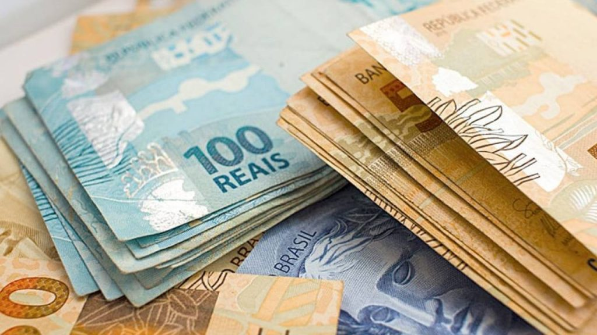

Como Poupar?

5 maneiras de poupar dinheiro
1. Registre suas despesas em um site de gastos
Poupar seu dinheiro faz com que você não dependa de cartões de crédito e empréstimos ou seja, traz independência financeira e tranquilidade para a sua vida. Pode parecer uma boa ideia gastar dinheiro com coisas que você pode aproveitar de imediato, mas vale a pena juntar dinheiro para realizar planos futuros que dependem de uma grana extra.
Você pode querer ter a sua casa própria, fazer uma viagem, ter filhos ou fazer um curso. Calcule o valor dos seus sonhos, além de como e quando você quer realizar eles, e poupe dinheiro para isso .
2. Gaste menos do que ganha
Se o que você ganha é igual ao que você gasta ou menos, você acabará o mês sem dinheiro nenhum para poupar. Por isso, ou seus gastos precisam diminuir. Pode ser uma surpresa descobrir que o que mais pesa no orçamento são aqueles gastos quase invisíveis, aqueles R$ 5 a mais aqui e ali. É com eles que mais precisamos tomar cuidado se queremos guardar dinheiro.
3. Estipule metas para te motivar
Ter metas para poupar dinheiro mantém você com foco. Mas não vale ter a meta “poupar dinheiro em 2021”. Chegar no fim do ano tendo poupado R$ 1 ou R$ 1.000 significaria meta cumprida nesse caso.Por isso é importante estabelecer quanto você quer juntar e até quando. Outra dica é dividir sua meta em partes. Quer juntar R$ 1.200 até o fim do ano? Então a sua meta pode ser poupar R$ 100 por mês ou R$ 25 por semana. Alcançar essas metas menores será motivador para continuar guardando dinheiro.
4. Aprenda a dizer não
Muitos dos gastos são desnecessários e impulsivos. Tenha suas metas financeiras em mente o tempo todo e aprenda a dizer não. Todo o dinheiro que você deixa de gastar dessa forma pode ser poupado. Pode parecer difícil, mas vale a pena abrir mão de coisas no presente para ter segurança financeira e realizar sonhos no futuro.
5. Evite usar o cartão de crédito
O cartão de crédito pode ser seu melhor amigo, mas saiba que ele não é uma extensão do seu dinheiro. Além disso, os juros altos podem se tornar vilões da sua vida financeira.
Por isso, evite ao máximo usar o cartão de crédito, principalmente em compras compulsivas e desnecessárias. Use o mínimo possível seu limite para não ter surpresas na fatura e ter que abrir mão do seu dinheiro poupado para pagar ela.
Poupar dinheiro pode ser um hábito adquirido aos poucos, com pequenas mudanças e metas que vão te levar aos seus objetivos e sonhos. Os primeiros reais economizados hoje podem ser uma fortuna daqui a algum tempo.
Artigos Semelhantes:
Gestão Financeira

Investimentos
Fontes de Renda